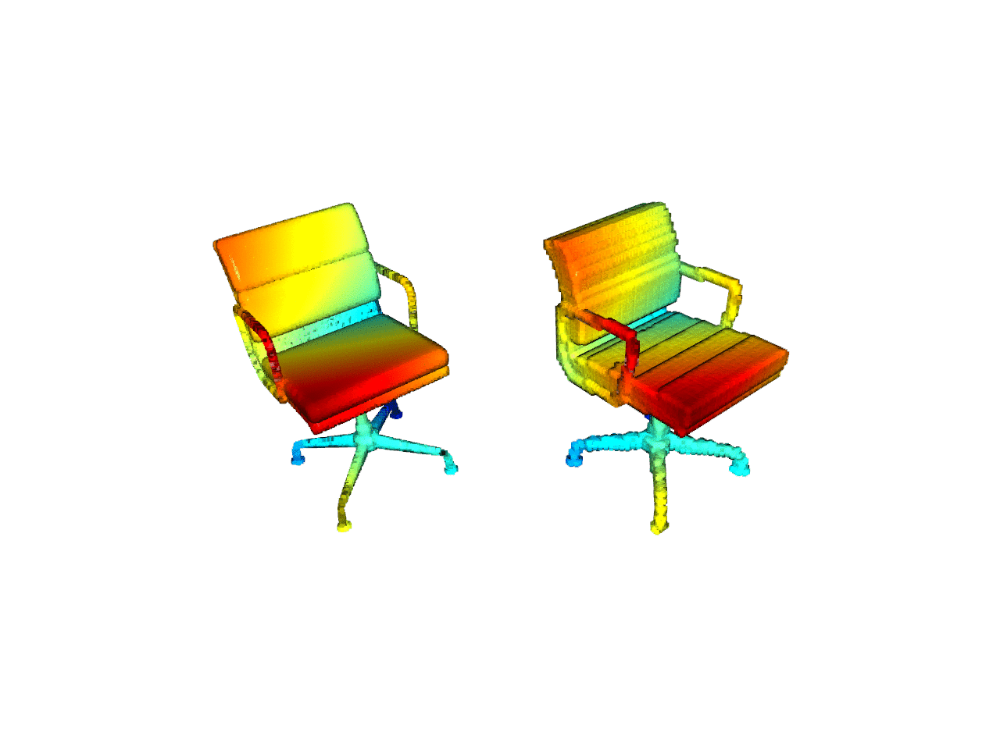

3D Sparsity Pattern Reconstruction¶
In this page, we will go over a simple demo example that trains a 3D convolutional neural network that reconstructs a 3D sparsity pattern from an one-hot vector. This is similar to the Octree Generating Networks, ICCV’17. The input one-hot vector indicates a 3D Computer Aided Design (CAD) chair index from the ModelNet40 dataset.
We use MinkowskiEngine.MinkowskiConvolutionTranspose along with
MinkowskiEngine.MinkowskiPruning to sequentially upsample a voxel by a
factor of 2 and then remove some of the upsampled voxels to generate target
shapes. The general network architecture looks similar to the following
diagram, but the details might differ.

Before we proceed, please go over the training and data loading tutorial first.
Making a Sparsity Pattern Reconstruction Network¶
To create a sparse tensor defined in a 3D grid world from a vector, we need to upsample sequentially from a \(1 \times 1 \times 1\) resolution voxel. Here, we use a block that consists of MinkowskiEngine.MinkowskiConvolutionTranspose, MinkowskiEngine.MinkowskiConvolution, and MinkowskiEngine.MinkowskiPruning.
During a forward pass, we create two paths for 1) the main features and 2) a sparse voxel classification to remove unnecessary voxels.
out = upsample_block(z)
out_cls = classification(out).F
out = pruning(out, out_cls > 0)
Until the input sparse tensor reaches the target resolution, the network repeats a series of upsampling and pruning that removes out unnecessary voxels. We visualize the results on the following figure. Note that the final reconstruction captures the target geometry very accurately. We also visualized the hierarchical reconstruction process of upsampling and pruning.
Running the Example¶
To train a network, go to the Minkowski Engine root directory, and type:
python -m examples.reconstruction --train
To visualize network predictions, or to try out a pretrained model, type:
python -m examples.reconstruction
The program will visualize two 3D shapes. One on the left is the target 3D shape, one on the right is the reconstructed network prediction.
The entire code can be found at example/reconstruction.py.